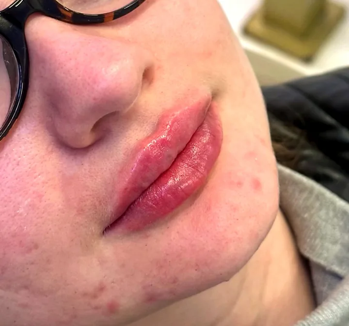
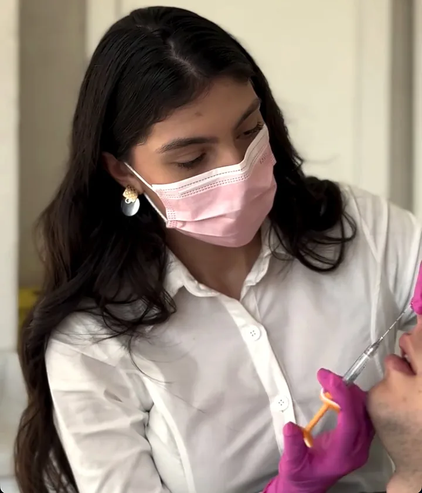
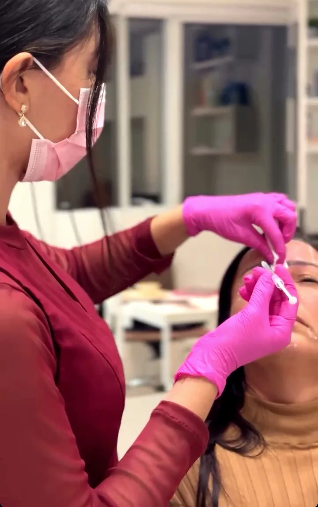
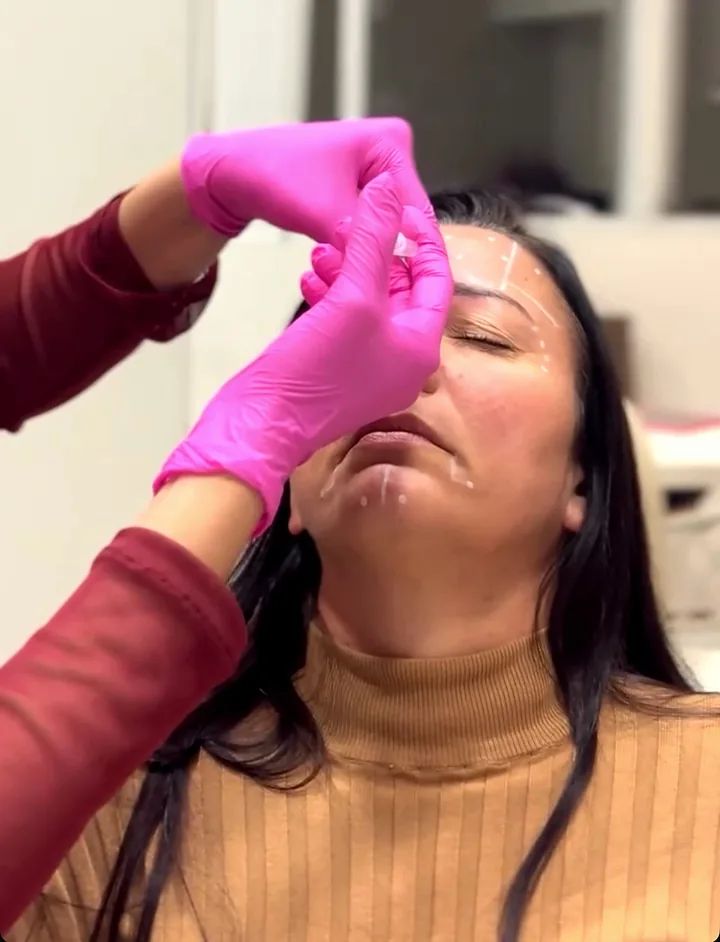
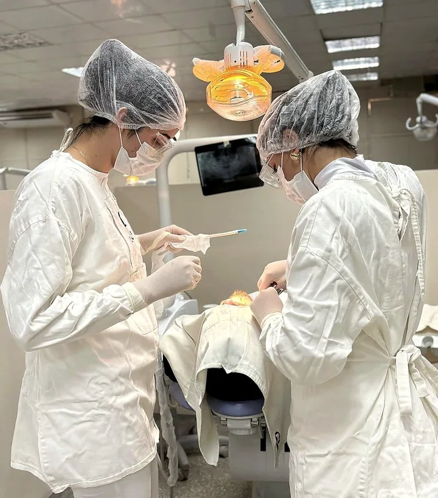
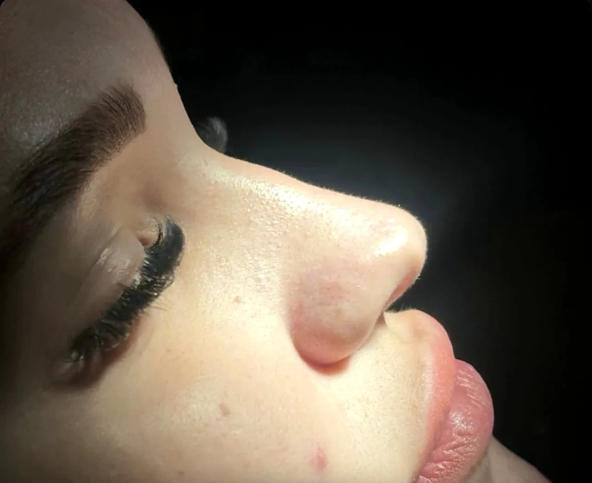

I
Rinomodelação
Ajuste do dorso e da ponta do nariz com ácido hialurônico, sem cortes, para um perfil mais harmônico.
Prazer, eu sou a Dra. Vanessa
Cirurgiã-dentista apaixonada por unir saúde, estética e naturalidade em cada atendimento.
01 Minha abordagem
A resposta vem depois de uma boa avaliação.
É comum chegar ao consultório já com o nome de um procedimento em mente. Meu papel é olhar para o seu rosto como um todo e indicar só o que faz sentido para você — com planejamento, técnica e responsabilidade.
Seu planejamento começa na consulta.
02 Procedimentos
E eles podem ser mais sutis do que você imagina. Cada protocolo é planejado de forma individual.
Ajuste do dorso e da ponta do nariz com ácido hialurônico, sem cortes, para um perfil mais harmônico.

Contorno, hidratação e volume na medida certa — lábios que parecem que sempre foram seus.

Estimula a produção natural de colágeno para melhorar firmeza e qualidade da pele ao longo do tempo.

Suaviza linhas de expressão preservando a sua expressividade. Também de forma preventiva, após avaliação.

Reposição de volume e definição de contornos — mandíbula, mento e malar — com planejamento discreto.

Cirurgia com técnica, segurança e cuidado no pós-operatório, com a base da formação em Bucomaxilofacial.
Não sabe qual é o seu caso?
Quero uma avaliação03 Resultados
“Dra., quero fazer, mas quero que fique discreto.” Pode ficar tranquila: esse pedido já faz parte do meu planejamento. A ideia é realçar o que é seu — nunca transformar você em outra pessoa.
Imagens de pacientes reais, publicadas com autorização. Os resultados variam de pessoa para pessoa e dependem de avaliação individual.

04 Como funciona
Uma conversa sobre o que te incomoda e uma análise completa da face, da pele, da sua saúde e da forma como você se expressa.
A indicação do que realmente faz sentido para você — com etapas, marcações, cuidados e expectativas claras antes de qualquer agulha.
Realizado com técnica, produtos regularizados e todo o cuidado com o seu conforto, do início ao fim.
Retorno e suporte no pós para garantir um resultado seguro, natural — e que você se reconheça no espelho.
05 Minha trajetória
Minha paixão pela odontologia sempre esteve ligada ao cuidado, à autoestima e ao bem-estar das pessoas.
Hoje, sigo me aperfeiçoando constantemente, com minhas especializações em Harmonização Facial e em Cirurgia e Traumatologia Bucomaxilofacial.
Por aqui, você encontra atendimento com muito carinho e compromisso com cada paciente.
06 Dúvidas frequentes
Não é esse o objetivo. O planejamento parte dos seus traços e busca um resultado que acompanhe o seu rosto, sem exageros. Naturalidade é prioridade em todos os procedimentos.
A idade, sozinha, não responde essa pergunta. O que define é a sua pele, a sua musculatura e a forma como você se expressa — por isso a indicação vem sempre depois da avaliação.
Preenchimento, bioestimulador ou toxina botulínica? Depende do que causa o incômodo. Na consulta, analisamos juntas e montamos o seu plano.
Varia conforme o procedimento, o produto e o organismo de cada paciente. Na avaliação você recebe essa estimativa para o seu caso, junto com o plano de manutenção.
O procedimento é feito com anestesia local e você recebe todas as orientações de pós-operatório para uma recuperação tranquila.
É só chamar no WhatsApp. Respondemos com os horários disponíveis e as orientações para a sua primeira consulta.
Seu planejamento começa na consulta
Atendimento em Balneário Camboriú · SC